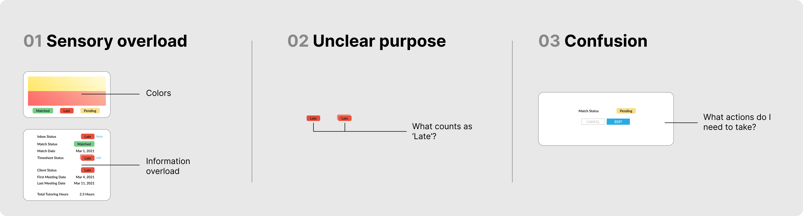
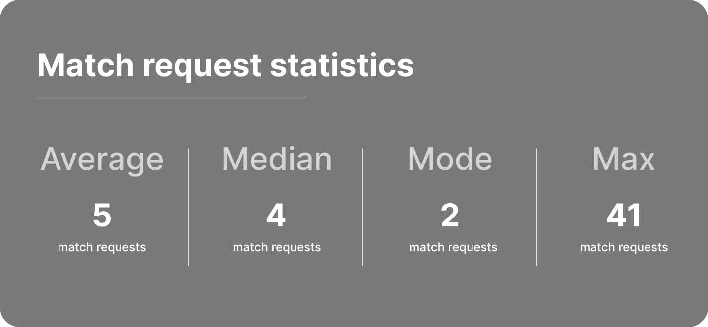

Background
Tutoria is a non-profit organization committed to providing free tutoring services to underserved communities. On the website, volunteers can sign up to tutor clients in English or Citizenship and clients could sign up to match with volunteer tutors to receive aid in their educational needs.
Project
Tutoria’s goal was to launch a match report screen so volunteer tutors can better manage their clients and requests. I was tasked to redesign the screens that were left by a previous UX designer to be ready for launching. Over the course of the project, I conducted extensive research, designed and prototyped, and met with the project manager, founder, and other UX designers.
My Role
Lead UX Designer
Timeline
2 months
Tools
Figma, User Interviews, A/B Testing, Journey Map, Affinity Mapping, Prototyping, Usability Testing
Upon joining the team, I met with one of the past UX designers and project manager to understand the scope of the project. I was tasked to work on the designs for the match report, a rundown for tutors to match with their clients and see client details. Looking at the match report designs, I was instantly overwhelmed and confused about what was going on. However, this was not enough to begin the designing process.
I hypothesized that the current designs were overwhelming and confusing for tutors to digest. I also hypothesize that tutors can not differentiate between their match requests and their matches because they are presented in one page and it requires tutors to go through a edit and save process to match with clients.
Because these pages are meant to be used by tutors, I went straight to the source. I conducted 5 qualitative user interviews to assess what details they would like to know to successfully track their clients' progress and how they perceived the current screens.
Finding 1. What tutors want to know
Tutors liked that they could track when they matched with a client and the time frame between their first meeting date and last meeting date. They also liked that they could see the statuses for their messages and timesheets with their clients. All in all, tutors liked the information that was provided in the current match design.
Finding 2. Overwhelming layout
While tutors liked the content of the cards, they felt overwhelmed with the bright colors and the all the information presented. With so many different statuses, tutors were confused about what each meant. They felt that it took a lot of effort to fully comprehend all of the information.
Volunteer tutors find it difficult to manage and manage their matches and match requests with the current match report design. How can we provide this information in one place while making the information easily digestible for the volunteer tutors?
Problems with the current design
1. Information and sensory overload - The current design uses high contrast colors and homogenous font hierarchy to indicate to the tutors statuses of different aspects of their relationship with the client. This is all laid out in rows after each other, 4 out of 5 users found this to be confusing and overwhelming.
2. Unclear purpose - Users wondered what each status meant. There is a disconnect between the designs and their purpose that is preventing tracking and managing an easy process for tutors
3. Confusion - With the current layout, tutors are unsure what requires action.

The updated match card
Differentiation between matches and match requests
After conducting my research and completing the updated designs, I shared my findings and proposals with the stakeholders at Tutoria. However, the founder expressed a strong preference for maintaining the previous layout of the designs. Additionally, I was informed that due to limitations with the development team, it was necessary to keep the matches and match requests on a single screen, which restricted my ability to design other screens.

Gathering the data
I knew I needed to conduct further research to support my designs. However, I began to consider the disorganized layout when there are more than six cards on the screen. To gather relevant information, I spoke with the project manager and obtained statistics on the number of match requests received by volunteer tutors. On average, tutors receive five match requests, but there were a few cases where one volunteer received 41 requests and another received 32 requests.
Creating a long-term solution
While the average volunteer receives 5 requests, designing for only the average user will not be a long term solution. If the average match requests increases, having all homogenous matches and match request cards in one place will not be sustainable.
The limits
Because there were limits on flows of screens that I could work with, I had to figure out a way to organize matches and match requests on one page while ensuring that the page is not overwhelming or confusing for tutors.
Designing for the outliers
The current design does not distinctly categorize the different states of relationships between clients and volunteer tutors. I began to try to categorize the different states in one screen, but quickly realized that it was quite difficult with the bulkiness of the current match cards.
Applying previous research
To align with tutors' needs, I maintained the changes in color, font hierarchy, and categorization of information from the previous design. However, with the limitation of a single page, I wanted to maximize the screen so it can best serve the tutors.
Vertical to horizontal
In brainstorming how to maximize the space, I created low fidelity wireframes. I redesigned the match cards from tall rectangles to wide rectangles for easier readbility.
A/B testing
Running 5 A/B tests with tutors, I collected some key insights about tutors' thoughts on the previous design, the updated design, and their comparisons.
Overall consensus
5 out of 5 users preferred the new design because of its simplicity, readability, and ease of comprehension. 4 out of 5 users mentioned that they especially liked it because the 'Match' and 'Decline' buttons provided them with clear actions to take for match requests.
The final product allows tutors to view their match requests and matches in one page. They are able to decline or accept. When they accept, the match will appear under 'Matches'.
1. Advocating for the users – Within the organization, I observed that the founder had a significant influence on design decisions. Utilizing my research skills became crucial in defending my design choices and advocating for the needs of the users, ensuring that they came first throughout the design process.
2. Working with limited resources – Working within a non-profit organization, I encountered challenges in implementing design changes due to limitations with what can be developed and what couldn’t. There were also limited resources on recruiting participants and conducting user research. However, this experience taught me the importance of embracing creativity to overcome these obstacles and find alternative solutions.